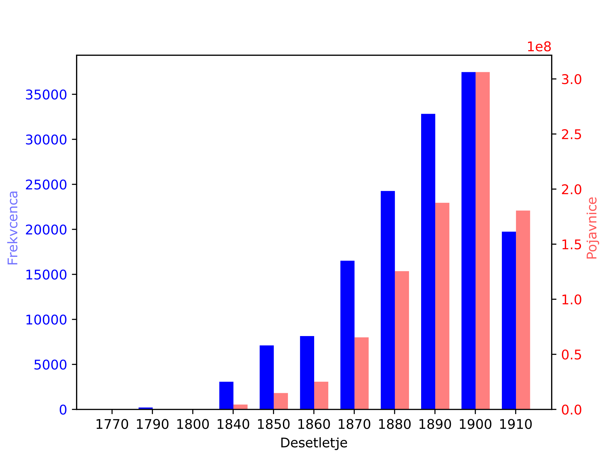
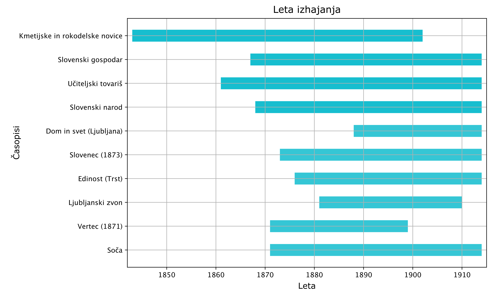
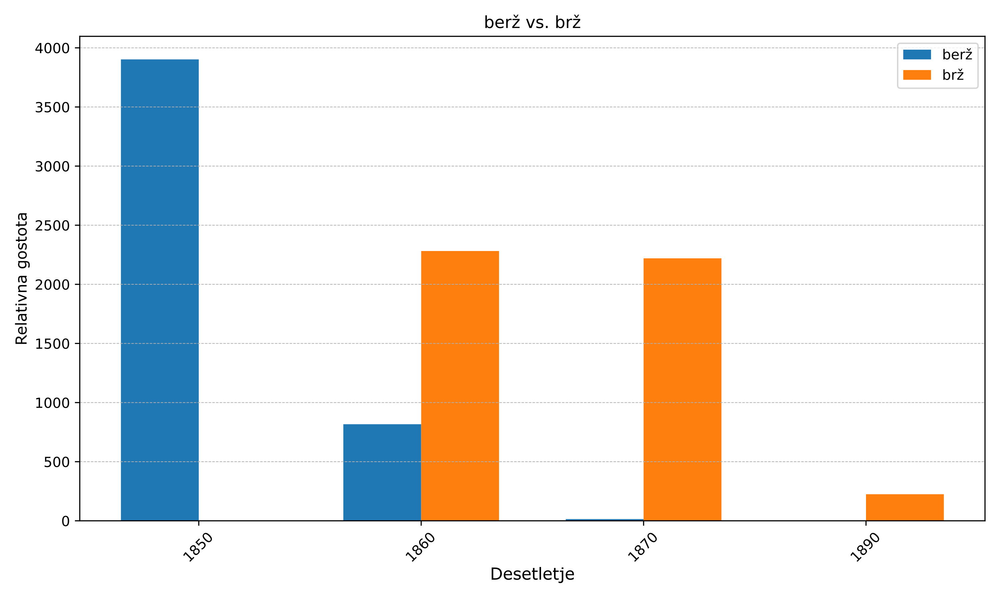
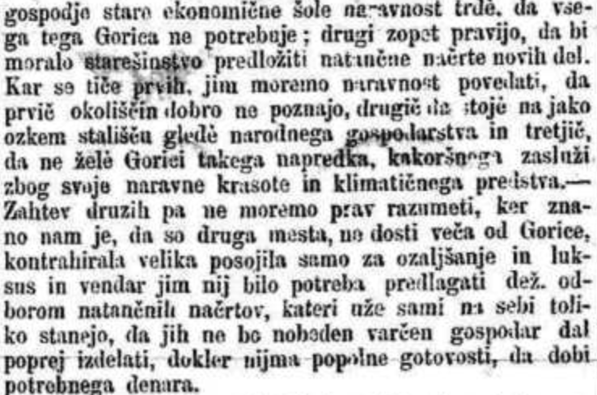

Računalniška analiza slovenskih zgodovinskih časopisov (1771–1914): jezikovni, tematski in državotvorni uvidi
IZVLEČEK
1Prispevek predstavlja računalniško-jezikoslovno analizo sPeriodike, zgodovinskega korpusa slovenskih periodičnih publikacij, izdanih med letoma 1771 in 1914. Z analizo ključnih besed ter diahrono analizo smo raziskali jezikovne, tematske in zgodovinske razsežnosti desetih najvidnejših časopisov v korpusu. Ugotovitve razkrivajo osrednjo vlogo teh časopisov pri oblikovanju slovenskega narodnega prebujanja v obdobju po letu 1848, hkrati pa poudarjajo raznolike tematske usmeritve posameznih periodičnih publikacij, kot so kmetijstvo, pedagogika, književnost in oglaševanje. Poleg tega raziskava obravnava izzive, ki jih prinaša slaba kakovost optičnega prepoznavanja znakov (OCR) pri digitalizaciji zgodovinskih besedil, ter njihove posledice za jezikovno in vsebinsko analizo. Združevanje računalniških metod z zgodovinskim raziskovanjem v tej študiji ponuja vpogled v razvoj slovenskega jezika, vlogo medijev pri oblikovanju narodne identitete in možnosti za izboljšanje besedilnih virov, temelječih na OCR.
2Ključne besede: zgodovinski časopisi, analiza ključnih besed, napake OCR, korpusno jezikoslovje
ABSTRACT
COMPUTATIONAL ANALYSIS OF SLOVENIAN HISTORICAL NEWSPAPERS (1771–1914): LINGUISTIC, THEMATIC, AND NATION-BUILDING INSIGHTS
1This paper presents a computational linguistic analysis of sPeriodika, a historical corpus of Slovenian periodicals published between 1771 and 1914. Using keyword analysis and diachronic analysis, we explore the linguistic, thematic, and historical dimensions of ten prominent newspapers in the corpus. Our findings reveal the centrality of these newspapers in shaping Slovenian nation-building during the post-1848 period, while also highlighting the diverse thematic orientations of individual periodicals, including agriculture, pedagogy, literature, and advertising. Moreover, the study examines the challenges posed by low-quality Optical Character Recognition (OCR) in historical text digitisation and its implications for linguistic and content analysis. By combining computational methods with historical inquiry, this research provides insights into the evolution of the Slovenian language, the media’s role in nation-building, and the potential for improving OCR-based textual resources.
2Keywords: historical periodicals, keyword analysis, OCR errors, corpus linguistics
1. Uvod
1V zadnjem desetletju smo priča porastu raziskav zgodovinskih časopisov.1 Rast je posledica vse večjega priznanja zgodovinskih časopisov kot dragocenih primarnih virov, ki ponujajo vpogled v pretekle družbe, kulture in dogodke. Raziskave pokrivajo širok spekter aplikacij, od digitalizacije zgodovinskih časopisov in ustvarjanja obsežnih visokokakovostnih digitalnih korpusov do naprednih računalniških pristopov za analizo jezikovnih sprememb, sentimenta in diskurza v zgodovinskih kontekstih.
2Hkrati se sodobne metodologije vse bolj prilagajajo specifičnim izzivom zgodovinskih časopisov, kot so degradirana besedila, nekonsistenten zapis besed in večjezične zbirke. Ti pristopi preoblikujejo obdelavo zgodovinskih časopisov v interdisciplinarno področje, ki povezuje digitalno humanistiko, računalništvo in arhivske študije.
3sPeriodika2 je nedavno objavljen korpus zgodovinskih slovenskih periodičnih publikacij iz obdobja 1771–1914. Korpus je obsežen in temelji na digitaliziranih časopisih iz digitalne knjižnice dLib, ki jo upravlja Narodna in univerzitetna knjižnica Slovenije. Vsebuje nekatere najpomembnejše časopise tistega časa, ki so prispevali k večji pismenosti in narodnemu prebujanju v Sloveniji.3, 4
4Prispevek je korpusno-jezikoslovna študija korpusa sPeriodika in predstavlja dopolnitev ter prevod prispevka na konferenci JTDH.5 Razširitev zajema dodatno poglavje o zgodovinskem razvoju jezika z analizo arhaičnih besed (razdelek 3.3), analiza napak OCR pa je razširjena v samostojno poglavje. Izbrali smo deset časopisov z največjim številom izdaj in izvedli osnoven kvantitativni pregled vsebine. Kakovost optične prepoznave znakov (OCR) v korpusu je nizka, a primerljiva s podobnimi zgodovinskimi digitaliziranimi časopisi,6 zato nas je zanimalo, ali lahko kljub temu izluščimo značilnosti časopisov s pomočjo analize ključnih besed, pogostosti besed in konkordanc. V rezultatih podamo splošen kvantitativni opis časopisov, vpogled v zgodovinski razvoj slovenskega jezika in pregled napak OCR. Z raziskavo poudarimo pomen označenih zgodovinskih izdaj za slovensko raziskovalno skupnost, saj bi brez digitalno dostopnega in označenega korpusa tak pregled težko izvedli.
2. Sorodna dela
1Zgodovinski časopisi se pogosto uporabljajo v digitalni humanistiki, predvsem zaradi sodobnih prizadevanj za digitalizacijo, dostopnih vmesnikov za raziskovanje vsebine7 in odprtih repozitorijev. Raziskave zajemajo širok spekter, od diahronih in primerjalnih analiz do diskurzivnih študij, pri čemer je analiza premika konceptov ena izmed najvidnejših metod. Primerjalne študije se osredotočajo na primerjave med državami8 ali raziskovanje regionalnih razlik.9 Diahrone študije pogosto raziskujejo premike konceptov,10, 11, 12 semantične spremembe13 ali spremembe tematik skozi čas.14 Druga veja raziskav vključuje vsebinsko usmerjen pristop, ki se osredotoča na nastanek javnih diskurzov15 ali državotvorno besedišče.16, 17 Nekatere raziskave se osredotočajo tudi na večjezičnost,18, 19 ki je značilna za zgodovinske časopise in otežuje primerjalno analizo.
2Izven digitalne humanistike so slovenski zgodovinski časopisi priljubljena tema raziskav. Večina teh se osredotoča na procese narodnega prebujanja, zlasti po marčni revoluciji leta 1848.20, 21 Najobsežnejšo študijo je izvedla Smilja Amon,22 ki predstavlja pregled slovenskega novinarstva. Ljubljanski zvon iz leta 1885 ponuja podroben pregled časopisov tistega časa,23 pri čemer navaja 34 časopisov v slovenščini, skupaj z opisi, uredniki, izdajatelji in cenami. Druge raziskave se večinoma osredotočajo na Kmetijske in rokodelske novice,24 ki so postavile temelje slovenskemu novinarstvu.25 Jezikovne analize so prav tako pogoste, le malo raziskav pa se posveča vsebinski analizi in primerjavam. Ena takih je analiza Štepca26 (1987), ki obravnava poročanje o zločinih v Slovencu in Slovenskem narodu. Štepec ugotavlja, da konservativni Slovenec prepušča poročanje o zločinih liberalnemu Slovenskemu narodu, saj to vidi kot nekatoliško in nepotrebno. Druge raziskave obravnavajo jezikovno vprašanje v Slovenskem pravniku,27 novice o Istri,28 modo v ženskih časopisih29 in socialnodemokratsko periodiko.30
3. sPeriodika
1sPeriodika31 je korpus slovenskih zgodovinskih časopisov, izdanih med letoma 1771 in 1914. Korpus je ustvaril Dobranić s sodelavci,32 temelji pa na optično prepoznanih zapisih, ki so jih v različnih obdobjih z različnimi tehnologijami ustvarili v Narodni in univerzitetni knjižnici Slovenije, pri čemer so avtorji izvedli dodatno čiščenje in predobdelavo. Korpus je na voljo v repozitoriju CLARIN.SI33 in v konkordančniku NoSketch Engine.34
3.1. Opis
1Korpus sPeriodika vsebuje 216 časopisov z različnim številom izdaj (največ 28.406, najmanj 1). Skupno število izdaj je 148.457. Kot prikazuje Slika 1, se je aktivnost izdajanja postopoma povečevala do prve svetovne vojne, ko je večina časopisov prenehala izhajati. Zadnje desetletje vključuje podatke samo do leta 1914, kar pojasnjuje upad frekvence.

Vir: avtorica iz podatkov NoSketchEngine
2Zaradi dolgega repa v distribuciji izdaj po časopisih smo se odločili analizirati deset časopisov z največ izdajami, kar predstavlja 78 odstotkov korpusa. Takšno merilo smo izbrali, da zajamemo časopise z največjim nacionalnim dosegom in dovolj dolgim časovnim razponom. Tabela 1 prikazuje deset izbranih časopisov s številom in deležem izdaj (zaokroženo na dve decimalni mesti).
3Naslovi časopisov nosijo pomenske poudarke, ki na splošno določajo njihovo vsebino: Kmetijske in rokodelske novice, Slovenski gospodar, Učiteljski tovariš, Slovenski narod, Dom in svet, Slovenec, Edinost, Ljubljanski zvon, Vertec in Soča.
3.2. Primerjava ključnih besed
1Za obravnavane časopise smo s pomočjo orodja NoSketch Engine izluščili ključne besede. Te smo primerjali s sPeriodiko, kar pomeni, da smo izluščili leme, ki so v določenem časopisu močno zastopane in zato statistično značilne. Lematizacija je bila izvedena s postopkom CLASSLA-Stanza, kot je navedeno v izvirnem članku o sPeriodiki.35 Ključnost (angl. keyness) je v NoSketch določena na osnovi enostavne matematične metode36 s parametrom glajenja N = 1 (privzeta nastavitev).
| Časopis | št. objav | % objav | št. pojavnic |
| Kmetijske in rokodelske novice (KRN) | 28406 | 19 | 29,834,568 |
| Slovenski gospodar (SG) | 16009 | 11 | 22,602,374 |
| Učiteljski tovariš (UT) | 15674 | 11 | 24,337,225 |
| Slovenski narod (SN) | 14039 | 9 | 183,294,799 |
| Dom in svet (DS) | 11073 | 7 | 32,326,449 |
| Slovenec (SVN) | 10897 | 7 | 137,506,802 |
| Edinost (ED) | 8371 | 6 | 98,274,429 |
| Ljubljanski zvon (LZ) | 3923 | 3 | 15,590,800 |
| Vertec (VT) | 3515 | 2 | 3,170,465 |
| Soča (SČ) | 3367 | 2 | 38,879,707 |

Vir: NoSketchEngine
2Analizirali smo prvih sto ključnih besed in jih predstavili v Tabeli 2. Očitne napake OCR smo izključili, saj želimo prikazati osrednjo vsebino časopisa, ne naključnih napak. Poročamo tudi o odstotku napak OCR (delež napak med 100 zadetki).
3.2.1. Kmetijske in rokodelske novice
1Kmetijske in rokodelske novice so zveste svojemu imenu, saj obravnavajo kmetijske teme (kmetovavec, žlahen, žebec37) ter lokalne novice (Kranjska). Časopis je bil prvi polnopravni časnik v slovenščini, zato vsebuje več arhaičnih besed (onidan, en malo) kot drugi časopisi. Preostale ključne besede sodijo v raznolike kategorije, od rubrik v časopisu (novičar) in financ (dnar) do novic o Rusiji (rusovski) ter narodno-prosvetnih tem (čitavnica38). Analiza ključnih besed kaže širok spekter tem, ki jih je časopis pokrival, ter njegovo dolgoletno osrednjo vlogo v kulturnem življenju Slovencev.39
3.2.2. Slovenski gospodar
1Slovenski gospodar je prvi časopis na seznamu, ki ga močno zaznamujejo napake OCR (94 odstotkov40). Pregled v konkordančniku pokaže, da je črka »n« pogosto prepisana kot »a« (sloveaski –> slovenski, aaš –> naš, aemški –> nemški), črka »v« pa kot »7« (pra7). Druge ključne besede razkrivajo, da je pogosto napačna tudi zamenjava »č« za »6«. Omenja se tudi izraz Stajerc, ki je napačna oblika besede Štajerc. Pojem lahko pomeni prebivalca Štajerske, vendar se najpogosteje nanaša na časopis Štajerc, ki je izhajal med letoma 1900 in 1918. Ton je precej žaljiv, saj je bil Slovenski gospodar katoliški in konservativen časopis, medtem ko je bil Štajerc napreden pronemški časnik (podrobneje opisan v Jezernik41). Pomenske ključne besede se nanašajo na sejme (sermon), dogajanje (izgoditi), zlatnike (fl), šolsko zvezo (šulverein), ljudi (poslanec dr. Franc Radaj; Franc Kosar), spoštovane (vlč, velečastiti) in posilinemce (posmehljiv izraz za pronemške Slovence).
3.2.3. Učiteljski tovariš
1Učiteljski tovariš je zvest svojemu imenu. Večina ključnih besed se nanaša na pedagogiko (zavezin42 konvikt,43učiteljstvo, učiteljski, lehrerbund, pedagoški, koleginja, ljudski). V razpravah je opaziti politični vidik, saj se pogosto omenja »Slomškar«, kar se nanaša na konkurenčno »Slomškovo zvezo«, zvezo katoliških učiteljev. Pri besedi »tovarišica« niti iz kolokacij ni jasno, ali ima političen prizvok. Vendar pa sta obe sklicevanji na ženske kolegice (tovarišica in koleginja) v Učiteljskem tovarišu močno zastopani, kar morda kaže na to, da je časopis ženskam prisojal večjo stopnjo enakopravnosti. Pogostost omenjenih besed je namreč v tem časopisu bistveno večja v primerjavi s splošnim korpusom, vendar kolokacije ne razkrivajo posebnih razlik v kontekstu. Učiteljski tovariš prav tako vsebuje veliko nemških izposojenk (Lehrerbund, Lehrer, Volkschule, Lehrerschaft, Gesuche, Vorgeschriebenen) in omembe oseb (Črnagoj, Jelenc, Maier, Strmšek, Režek, Požegar, Gangl).
3.2.4. Slovenski narod
1Analiza ključnih besed časnika Slovenski narod razkriva številne specifične rubrike. Časopis je redno objavljal železniške vozne rede za avstrijske železnice (amstetten, pontabel, selzthal), poročila z dunajske borze (prior oblig.), meteorološka poročila (smeri vetrov) in specifične oglase (Moll Seidlitz prašek, Revaliescere du Barry, Berger Kotran milo). Nekatere besede se nanašajo na uvodni odstavek časopisa, ki je vseboval navodila za pošiljanje prispevkov (izvoti,44 četiristopne). Opazili smo tudi nekatere za Slovenski narod značilne napake OCR, ki so morda posledica izbire pisave (tuđi, tuđ,45ćel46). Nekateri rezultati so morda posledica prekomernega popravljanja, saj Dobranić in sodelavci47 omenjajo statistično osnovano združevanje razdeljenih besed (Trammwaydrušt, Stražatoplice).
3.2.5. Dom in svet
1Dom in svet (Ljubljana) je močno literarno in umetniško usmerjen. Za časopis so značilna imena literarnih junakov (bodriški nadknez Gotšalk, Viljenica, Virida, Maruška, Ančka) in avtorjev zgodb (Podgoričan), ki jih je časopis stalno objavljal. Velik del njihovih novic omenja umetniška dela (spominiki, bilina, pasionski) in publikacije (besedilo o klinopisnih spomenikih, ki ga je napisal F. Sedej in je bilo objavljeno v istem časopisu). Najpresenetljivejši je močan vpliv slovanskega umetniškega sveta na časopis. Dom in svet redno objavlja biografije srednje-, vzhodno- in južnoslovanskih avtorjev ter seznam slovanskih publikacij (zlasti ruskih, srbskih in hrvaških).
3.2.6. Slovenec
1Podobno kot Slovenski narod tudi analiza ključnih besed časnika Slovenec razkriva specifične rubrike, na primer poročila z dunajske borze (vravnaven, salmov, dunavski, napoleondor, napoleond,48 waldsteinov), meteorološka poročila in podlistek Pismo Boltatovega Pepeta,49 napisan v narečju (gespud, tku, kokr). Med ključnimi besedami so tudi oglasi, na primer za Merkur Exchange Limited Company (kurzen), steklarske delavnice in trgovino z oljnimi barvami. Nekaj ključnih besed se nanaša na jugovzhodno Evropo (Hrvaška, Madžarska, Bolgarija), kar delno nakazuje politično usmeritev časopisa. Vendar smo glede na politično pomembnost časnika v slovenskem prostoru pričakovali večji delež političnih besed. Mnogo ključnih besed izhaja iz glave časopisa, kjer so bile podane praktične informacije o naročilu in distribuciji časopisa. Vendar so tudi drugi časopisi, kot so Slovenski narod, Slovenski gospodar, Edinost in Soča, imeli obsežne glave. Visoka pogostost ključnih besed iz glave je morda posledica jezikovnih značilnosti glave časopisa Slovenec.
3.2.7. Edinost (Trst)
1Edinost (Trst), vodilni časopis tržaških Slovencev, vsebuje veliko besed, povezanih z oglasi. 68 odstotkov ključnih besed se nanaša na ulice ali kraje poslovanja (barriera, nuova, vecchia, piazza, galatti). Večinoma gre za italijanska imena ulic, a so omenjeni tudi istrski kraji (Pula, Rovinj). Edinost je pokrivala istrsko regijo do leta 1902, ko je bilo ustanovljeno Politično društvo Hrvatov in Slovencev v Istri.50 Pri omembi Primorske se večina pojavnic nanaša na vremensko napoved in podnaslov časopisa (Glasilo političnega društva »Edinost« za Primorsko). Omenjeni so tudi denarni izrazi (nvč je okrajšava za »novčič«, kovanec v vrednosti 1/100 zlatnika) in prostor za oglase (inseratni označuje oddelek časopisa za oglase). Oglasi vključujejo ponavljajoče se reklame za kavo (kava Santos good average), zdravstvene storitve (izdiranje, plombiranje, ambulatorij) in živila (pekarna, butejka). Podobno kot drugi časopisi tistega časa je Edinost redno objavljala železniške vozne rede. Besedi »Medpostaja« in »Pula« sta največkrat uporabljeni v kontekstu železniških voznih redov, podobno kot v Slovenskem narodu, vendar osredotočeno na italijanske železnice. Novice o železniških voznih redih kažejo, da je bil časopis zelo praktičen; ponujal je oglaševalski prostor za lokalna podjetja in podajal informacije o prevozu. Mnogi časopisi tistega časa so imeli podobne vsebine.
3.2.8. Ljubljanski zvon
1Ljubljanski zvon je bil vodilna literarna revija pomarčne dobe. Večina desetih najpogostejših ključnih besed se nanaša na literarne like (Gojko, Samorad, Trenk, Abadon, Zdenka). 29 odstotkov ključnih besed predstavljajo imena literarnih likov, kar poudarja literarno naravo revije. Vendar vsebine niso bile zgolj leposlovne. Omenjeni so denimo Slovniški razgovori, kjer je revija objavljala nasvete o pravilnem slovenskem črkovanju in slovnici (sedanjik, sgl, Miklošič, dovršnik), in Štrekljeve jezikoslovne mrvice, kjer je avtor razlagal slovnično sestavo, pomen in izvor določenih besed (subst). Veliko ključnih besed je posledica napak OCR, natančneje 36 odstotkov. Težava s ključnimi besedami pri Ljubljanskem zvonu je nekoliko posebna. Podobno kot pri Slovenskem gospodarju so najpogostejše napačno transkribirane besede. Te napake so tesno povezane z literarno naravo revije. Ljubljanski zvon je namreč edini analizirani časopis, ki dosledno uporablja naglase na samoglasnikih. Naglasi v slovenščini niso pogosti, vendar so bili v tej reviji verjetno uporabljeni za poudarjanje ritma in pravilne izgovarjave besed, ta slogovna izbira pa povzroča težave modelu OCR.
3.2.9. Vertec (1871)
1Vertec (1871) vsebuje veliko zgodb in je tako podoben Domu in svetu ter Ljubljanskemu zvonu, saj ga zaznamujejo literarni liki (Marijca, Marijec,51 Katarinka, Ivanek). Delež omemb literarnih likov med ključnimi besedami je 38-odstoten. V primerjavi z drugimi periodičnimi publikacijami so imena pretežno pomanjševalnice, kar odraža usmeritev časopisa na mlajše bralce. Vendar pa ime včasih ne označuje literarnih likov, temveč resnične osebe. Časopis je namreč poimensko navajal avtorje pravilnih rešitev ugank, skupaj z lokacijo. Druge ključne besede so idilične, povezane z družino ali naravo (dedek, sestrica, ptičica, čmrlj, lisica). Stopnja napak OCR pri tem časopisu je precej visoka – 36-odstotna.
3.2.10. Soča
1Soča je objavila več prevodov, vključno z deli Trije mušketirji Alexandra Dumasa (Athos, Porthos, Artagnan, Aramis), Grof Monte Cristo (Villefort), Quo Vadis? (Vinicij) in Križarski vitezi (Zbišek) Henryka Sienkiewicza ter Foma Gordejev Maksima Gorkega. Ključne besede v skupnem obsegu vključujejo 23 odstotkov imen likov. Časopis ima nekaj regionalnih posebnosti, na primer besedo »nunc«, ki v goriškem narečju označuje starejšega znanca. Regionalni značaj se odraža tudi v omembah lokalnih političnih osebnosti, kot sta Alojzij Pajer-Monriva, proitalijanski odvetnik in politik, ter Ivan Berbuč, politik in sourednik Soče. Zanimiva najdba je ključna beseda »prismojenec«. »Prismojenec« je bil vzdevek za Primorski list, konservativni časopis, ki je nasprotoval Soči, podobno kot je Slovenski gospodar nasprotoval Štajercu. Kljub temu je bila Soča vsebinsko bolj podobna Slovencu.52 Časopis vsebuje 53 odstotkov napak OCR, zaradi česar je eden najtežjih za analizo. Tipična napaka OCR za ta časopis je opuščanje strešice (uze,53 dezelni, drzaven, goriski). Poleg tega ima časopis nizko kakovost slik dokumentov, kar še povečuje verjetnost napak OCR.
3.3. Zgodovinski razvoj jezika
1Za dodatno analizo ključnih besed in preučitev razvoja jezika v slovenskih časopisnih publikacijah v poznem 19. in zgodnjem 20. stoletju smo izluščili frekvenčne podatke za izbrane besede iz prejšnjega poglavja. S tem smo želeli točneje opredeliti specifike časopisov z ozirom na razvoj slovenščine. Za primerjavo smo uporabili korpus sPeriodika (ne le deset glavnih časopisov), da bi celovito identificirali trende rabe besed. Izbrane besede so bile prepoznane arhaične besede iz analize ključnih besed: berž (brž), denes (danes), sklenica (steklenica), menenje (mnenje), rekši (rekoč), smijati (smejati), zanimljiv (zanimiv), žnjo/žnjim/žnjimi (z njo, z njim, z njimi) in zvršetek (konec). Čeprav je bilo kandidatov več, smo izbrali tiste pojavnice, ki so imele najvišje število pojavitev v svoji arhaični obliki. Večina frekvenčnih podatkov je bila pridobljena z iskanjem po lemi, razen za žnjo/žnjim/žnjimi, kjer je bil uporabljen poizvedbeni jezik CQL.
2Frekvence smo pridobili neposredno iz okolja NoSketch Engine. Frekvenčne podatke za časopise, katerih leta izhajanja vključujejo obseg (npr. 1901–1914), smo enakomerno porazdelili med leta, medtem ko smo za tiste, ki vključujejo sezono (npr. 1888/1889), podatke dodelili prvemu navedenemu letu (v tem primeru 1888). Poenostavljena porazdelitev po letih povzroči nekaj netočnosti, vendar je zaradi osredotočenosti na trende in ne na natančne številke taka poenostavitev zadostna.
3Rezultati so prikazani na stolpičnem diagramu (Slika 3). Grafe smo začeli z letom 1850, pri čemer smo podatke združili po desetletjih za lažjo primerjavo med grafikoni.
3.3.1. Menjava arhaičnih besed s sodobnimi
1Presenetljivo je, da je edina beseda, ki kaže visoko frekvenco na začetku obdobja z nenadnim prevzemom sodobne oblike, berž (Slika 3A). Berž so najpogosteje uporabljali v časopisu Kmetijske in rokodelske novice (2215 pojavitev, relativna gostota54 959,6), vendar pri relativni gostoti vodi Slovenska č(e)bela (3573,2). Raba besede berž je po koncu Bachovega absolutizma, ko so bile dovoljene tudi druge periodične publikacije, postopoma upadala. To je razvidno tudi iz rabe besede v Kmetijskih in rokodelskih novicah (Slika 4), kjer raba pada na podoben način.
3.3.2. Regionalne arhaične besede
1Beseda denes se je uporabljala pretežno v manjših časopisih (Slovenski tednik, Naprej), medtem ko je bila oblika danes v rabi bistveno pogosteje. Denes se je uporabljal približno do osemdesetih let 19. stoletja, ko je začel prevladovati sodobni zapis danes. Arhaična oblika verjetno izhaja iz kajkavskega jezika, ki je močno vplival na severovzhodni del današnje Slovenije,55 kjer so izhajale prve izdaje časopisa Slovenski narod. Menenje je bilo pogosto v regionalnih (južno)zahodnih časopisih (Gospodarski list, Novičar, Edinost, Slovenka). Prav tako izrazit regionalni značaj kaže zvršetek, z visoko relativno frekvenco v podobnih časopisih. Vendar je splošna frekvenca arhaičnih besed zelo nizka. Te besede so lahko posledica vpliva lokalnega narečja ali italijanskega jezika.
3.3.3. Literarni jezik
1Na podlagi primerjave rabe besed sta dva časopisa najbolj odstopala od jezikovne norme tistega časa. To sta literarna časopisa Ljubljanski zvon in Vertec. V Ljubljanskem zvonu so objavljali mnogi znani slovenski avtorji, kot so Anton Aškerc, Simon Gregorčič in Oton Župančič. Podobno so v Vertcu objavljali Fran Levstik, Dragotin Kette in Fran Saleški Finžgar. Glede na to, da so časopisa oblikovali pisatelji in pesniki, lahko jezikovna odstopanja pripišemo svobodi literarnega izražanja in eksperimentiranju.
| Razvrstitev | KRN | SG | UT | SN | DS | SVN | ED | LZ | VT | SČ |
| 1 | unidan | sejmov | zavezin | amstetten | nadknez | vravnaven | nvč | gojko | marijca | athos |
| -1,552 | -843 | -2,265 | -11,058 | -738 | -3,299 | -12,057 | -889 | -269 | -2040 | |
| 2 | novičar | izgoditi | konvikt | izvoti | virida | gespud | galatti | samorad | otiti | porthos |
| -3421 | -481 | -5,486 | -7,416 | -798 | -3,447 | -5,504 | -679 | -475 | -1,411 | |
| 3 | čitavnica | fl | učiteljstvo | pontabel | spominik | tku | barriera | trenk | štir | artagnan |
| -2,044 | -12,467 | -54,905 | -6,225 | -1,029 | -4,680 | -7,162 | -713 | -368 | -1,369 | |
| 4 | rusovski | šulverein | učiteljski | selzthal | bodriški | salmov | inseraten | abadon | vrtčev | aramis |
| -1,714 | -677 | -58,083 | -8,551 | -631 | -2,996 | -7,641 | -549 | -220 | -1,253 | |
| 5 | kmetovavec | radaj | slomškar | oblig | viljenica | kokr | nuova | zdenka | katarinka | nunec |
| -2,481 | -541 | -1,244 | -6,752 | -638 | -3,535 | -7,977 | -826 | -172 | -1,946 | |
| 6 | dnar | vlč | tovarišica | franzensfeste | juriš | napoleondor | konsorcija | groga | ivanek | zbišek |
| -2,238 | -903 | -4,632 | -7,256 | -912 | -3,206 | -5,091 | -1,046 | -181 | -1,004 | |
| 7 | žlahen | kosar | koleginja | četiristopen | gotšalk | kursen | pula | cetinovič | pesenca | meljavec |
| -1,433 | -673 | -1,031 | -3,690 | -610 | -2,771 | -7,343 | -334 | -203 | -928 | |
| 8 | krajnski | posilinemec | lehrerbund | steyr | maruška | dunavski | vecchia | dramatiški | marijec | villefort |
| -3,076 | -463 | -902 | -5,488 | -670 | -4,189 | -6,292 | -642 | -155 | -846 | |
| 9 | žebec | - | pedagoški | osoben | podgoričan | waldsteinov | medpostaja | obsezati | vzpomlad | vinicij |
| -632 | -2,796 | -28,671 | -996 | -2,349 | -3,331 | -1,943 | -176 | -821 | ||
| 10 | enmalo | - | črnagoj | vara | ančka | napoleond | piazza | premec | ivanko | foma |
| -823 | -779 | -13,567 | -1,407 | -2,234 | -14,364 | -381 | -170 | -916 | ||
| napake | 5% | 92% | 12% | 19% | 1% | 15% | 0% | 36% | 36% | 53% |

Vir: avtorica iz podatkov NoSketchEngine

Vir: avtorica iz podatkov NoSketchEngine
2Pojavnico obsezati so uporabljali pretežno v časopisu Ljubljanski zvon. Zabeležen je relativno velik porast besede v osemdesetih in devetdesetih letih 19. stoletja. Podobno je tudi z besedo zanimljiv, ki je imela višjo relativno frekvenco v Ljubljanskem zvonu kot v drugih časopisih, ter besedo smijati, ki se je pretežno uporabljala v literarnih časopisih v sedemdesetih in osemdesetih letih 19. stoletja (Vertec z relativno frekvenco 65,9 in Ljubljanski zvon s frekvenco 55,4). V devetdesetih letih 19. stoletja se je trend rabe besede smijati začel zmanjševati, prevladovati pa je začela sodobna oblika smejati. Rekši, arhaična oblika besede rekoč, je deležniška oblika glagola reči. Obe obliki sta bili v rabi v opazovanem obdobju, pri čemer je bila rekši precej manj priljubljena kot rekoč. Raba besede rekoč v sodobnem času prav tako upada (vir: metaFida v1.0). Časopisi so uporabljali obe obliki in niso pokazali večjih pristranskosti do rekši, razen Vertca (40,05) in Ljubljanskega zvona (27,64), kjer se oblika rekši uporablja nekoliko pogosteje. Nekateri manjši časopisi pa imajo še višjo relativno frekvenco. Sklenica je bila uporabljena zgolj občasno v sedemdesetih in osemdesetih letih 19. stoletja, brez kakšnega večjega časopisa, ki bi jo uporabljal v veliki meri. Žnjim/žnjo/žnjimi kaže porast na prelomu 20. stoletja, vendar interpretacija za to besedo ni povsem jasna.
3Oblikovanje slovenskega jezika je tesno povezano s strokovno razpravo o jezikovnih pravilih. Prva slovenska slovnica je bila Bohoričeva Arcticae horulae succisivae, izdana leta 1584. Skoraj dve stoletji je trajalo, da je bila izdana druga slovnica. Leta 1768 je izšla Pohlinova slovnica Kranjska gramatika, napisana v nemščini in osredotočena na kranjsko narečje. V začetku 19. stoletja je bilo veliko poskusov modernizacije slovenščine, kar je pripeljalo do izdaj slovnic pomembnih avtorjev, med njimi Kopitarja (1809), Vodnika (1811), Dajnka (1824), Metelka (1825), Murka (1832/43/50), Majarja (1850) in Miklošiča (1852). Kljub številnim konkurenčnim slovnicam je bil prvi slovenski pravopis objavljen šele leta 1899, avtor pa je bil Fran Levec. Plodovita dejavnost izdajanja slovnic priča o obdobju oblikovanja jezika, v katerem so se soočala nasprotujoča si stališča do pravopisa, izgovarjave, pisanja in skladnje. Ta soočenja so verjetno prispevala k vzporedni rabi določenih arhaičnih in/ali narečnih besed, kar je razvidno iz analize zgodovinskih časopisov.
3.4. Analiza napak OCR
1Napake OCR so predstavljale pomemben izziv pri analizi določenih časopisov (Slovenski gospodar, Soča). S pomočjo analize ključnih besed smo ročno identificirali napake OCR iz nabora 100 pojavnic. Pomanjkanje strešic smo obravnavali kot napako OCR, saj se beseda brez strešic šteje kot drugačna od besede s strešicami (drzaven/državen) ali pa lahko pomeni povsem drugo besedo (čelo/celo). V širšem pregledu 1000 ključnih besed smo odkrili 266 napak, vključno z manjkajočimi diakritičnimi znaki, zamenjavo znakov in napačno interpretacijo naglasnih znamenj kot številk (npr. dom6v namesto domov). Pomembno je omeniti, da so bili časopisi digitalizirani z različnimi modeli OCR, kar je povzročilo specifične napake v posameznih publikacijah.
3.4.1. Splošne napake OCR
1Nekatere napake OCR se ponavljajo in kažejo na temeljne slabosti modelov OCR za arhaične zapise in slovenščino. Najpogostejša napaka (24 odstotkov) je prepis črk n, s ali š kot a. Te napake so najpogostejše v časopisu Slovenski gospodar, ki ima tudi sicer največ napak OCR. Druga najpogostejša napaka (21 odstotkov) je pomanjkanje strešic (stajerski, drzaven), tretja (9 odstotkov) pa napačna transkripcija naglasnih znamenj kot številk – zlasti 6, 7 ali 2 (dom6v, rek6, už6, u2e, pra7). Naglasna znamenja so pogosto zapisana tudi kot d (takdj). Črka n na začetku pogosto pomeni, da se beseda začne z narekovaji (nkaj, nne, njaz). Zamenjava črk je zelo pogosta, zlasti med č in e (oee, užč), i in l (ijubi, nefranklran), c in e (Marijea, evetice) ter u in n (nčenki).
3.4.2. Naglasna znamenja
1Naglasna znamenja in strešice predstavljajo poseben problem pri transkripciji sPeriodike. Tukaj je primer iz Ljubljanskega zvona, edinega časopisa, ki redno uporablja naglasna znamenja na samoglasnikih (medtem ko Vertec to počne občasno):
- Takó kričálo vse je gôri náme. (izvirnik)
- Takd kričdlo vse je g6ri ndme. (prepis OCR)
2Napake vizualno delujejo smiselno. Ó in á sta prepisana kot d (ali občasno 6), ô kot 6, á tudi kot ä, é pa kot č. Kljub temu težave s transkripcijo omejujejo semantično analizo ključnih besed.
3.4.3. Napake v specifičnih časopisih
1Vertec ima specifične napake OCR. Čeprav te niso ekskluzivne za ta časopis, so v njem še posebej izrazite. Znakovne zamenjave pogosto prizadenejo črke in sklope črk m, u in ru. Zaradi podobnosti oblik se m pogosto prepiše kot ra, ni ali in. U se prepiše kot ii, ru pa kot ni ali m. Črka v je pogosto prepisana kot r, ó pa kot d ali 6.
2Pri časopisih, kjer se napake pogosto pojavljajo v ključnih besedah, smo primerjali pogostost napačno zapisanih besed s pravilnimi oblikami. Napačna oblika sloveaski se v korpusu pojavi 1855-krat, pravilna oblika slovenski pa 45.759-krat. Ključnih besed ni mogoče analizirati semantično, saj bi bilo treba vse napačne oblike najprej pretvoriti v pravilne. Vendar se napaka znatno pogosteje pojavlja v Slovenskem gospodarju kot v katerem koli drugem časopisu. Razlika v pogostosti pomeni, da ta napaka značilno označuje časopis in bi jo bilo mogoče uporabiti pri postopkih naknadne obdelave. Z drugimi besedami, takšne napačne oblike bi lahko naknadno popravili v izbrani publikaciji.
3.4.4. Kandidati za ponovno optično branje
1S stopnjo napak lahko določimo tudi kandidate za ponovno optično branje. Nekateri optično prebrani dokumenti so že zdaj slabe kakovosti ali pa so bili med prvimi digitaliziranimi časopisi. Sodobne rešitve OCR bi lahko dale precej boljši rezultat od obstoječih različic, vendar je ponovno optično branje celotne sPeriodike zamudno in nepotrebno. Smiselna rešitev bi bilo oblikovanje seznama kandidatov za ponovno optično branje. Na podlagi naših rezultatov bi Slovenski gospodar in Soča pridobila tako s ponovnim optičnim branjem kot tudi s sodobno OCR-transkripcijo, medtem ko bi Ljubljanski zvon potreboval le izboljšano transkripcijo (saj so optično prebrani dokumenti že ustrezni).
2Sodobne tehnologije OCR, skupaj z velikimi jezikovnimi modeli (VJM) in velikimi multimodalnimi modeli (VMM), odpirajo nove možnosti za izboljšanje natančnosti transkripcije. Na primer, GPT-4o je uspešno transkribiral slabše optično prebrani del časopisa Soča (Slika 5):

Vir Soča, 17. 9. 1874, https://dlib.si/details/URN:NBN:SI:DOC-5JQMY60Z/
gospodo staro ekonomične šole nezavnost trde, da vsega tega Gorica ne potrebuje; drugi zopet pravijo, da bi moralo starešinstvo predložiti natčene načrte novih del. Kar se tiče prvih, jim moramo naravnost povedati, da prvič okolišin dobro ne poznajo, drugič da stojé na jako ozkem stališču glede narodnega gospodarstva in tretjič, da ne želé Gorici takega napredka, kakoršnega zasluži zaradi svoje naravne krasote in klimatičnega prečistva. Zahtev drugih pa ne moremo prav razumeti, kar znano nam je, da so druga mesta, no dosti veča od Gorice, kontrahirala velika posojila samo za ozaljšanje in luksus in vendar jim ni bilo potrebno predlagati dež. odboru natancnih načrtov, kateri že sami na sebi toliko stanjo, da jih ne bo nobeden varčen gospodar dal poprej izdelati, dokler njim popolne gotovosti, da dobi potrebnega denarja .
3Zmožnosti VJM in VMM omogočajo prepoznavo slabše optično prebranih dokumentov skoraj brez dodatnega prilagajanja. VMM presegajo sodobne rešitve OCR pri neposredni prepoznavi besedila,56 tudi pri kompleksnih postavitvah, kot so izrezki iz starih kitajskih časopisov57 in rokopisna besedila.58 Medtem ko trenutne raziskave kažejo mešane rezultate za popravke po optični prepoznavi znakov,59, 60 bi prilagoditev VMM za zgodovinske podatke lahko izboljšala rezultate. Ti napredki odpirajo pot za globlje analize zgodovinskih korpusov,61 vključno s povzetki vsebine, analizo trendov in semantičnim iskanjem. Poleg tega nastajajo novi VJM, posebej prilagojeni zgodovinskim podatkom (ZVJM), ki omogočajo še podrobnejši vpogled v zgodovinske družbe.62
4. Razprava
1Časopise smo opredelili z analizo ključnih besed na podlagi lem. Periodike so običajno opredeljene bodisi s svojo deklarirano usmeritvijo (npr. KRN, Učiteljski tovariš) bodisi s podlistki in oglasi (npr. Dom in svet, Slovenski narod) ali pa – žal – z napakami OCR (Slovenski gospodar).
2Poudarek na podlistkih in oglasih se ujema s predhodnimi raziskavami o zgodovinskih slovenskih periodikah. Podlistki, tj. časopisni odseki, namenjeni leposlovju, so igrali ključno vlogo pri razvoju slovenske proze, saj so avtorjem omogočali zgodnji dostop do širšega občinstva.63 Analiza ključnih besed je sicer identificirala zgolj značilne izraze, ki sovpadajo z določenimi literarnimi liki, vendar so ti neločljivo povezani s podlistki, v katerih se pojavljajo.
3Nasprotno pa je bila vloga oglasov bolje poudarjena. V poznem 19. stoletju so oglasi zavzemali pomemben del periodik, pri čemer je bilo razmerje med uredniškimi in oglasnimi vsebinami 4 : 1.64 Ključne besede so izpostavile specifične oglaševalce in tudi splošni oglaševalski jezik (npr. inseraten, nvč).
4Analiza ključnih besed je razkrila prehodno stanje slovenskega jezika v tem obdobju. Vsaka periodika je imela svojevrstne pravopisne konvencije za knjižne besede. Na primer, Kmetijske in rokodelske novice uporabljajo nograd namesto vinograd in berž namesto brž, medtem ko Slovenski narod uporablja denes namesto danes in sklenica namesto steklenica. Celo časopisi, ki so bili v ospredju jezikovne standardizacije, denimo Ljubljanski zvon, vsebujejo besede, ki so danes arhaične (npr. obsezati namesto obsegati in smijati namesto smejati). Diahrona analiza je pokazala, da so bile nekatere besede specifične za določene regije, druge pa so odražale eksperimentalno ali umetniško rabo v vodilnih literarnih periodikah.
5Napake OCR so predstavljale pomemben izziv pri analizi določenih periodik. Pri periodikah s pogostimi napakami OCR lahko napačne besede izkrivljajo analizo, zato bi popravljanje besedila po optični prepoznavi znakov izboljšalo natančnost semantične analize. Kot poudarjajo Strange in sodelavci,65 je popravljanje po OCR ključno za tehnike, kot je analiza ključnih besed. Nekatere periodike so bile zaradi ponavljajoče se vsebine podvržene pristranskostim v analizi ključnih besed. V Slovencu, na primer, je 29 odstotkov ključnih besed pripadalo glavi časopisa, medtem ko se je 68 odstotkov ključnih besed v Edinosti nanašalo na italijanska ulična imena. Takšne pristranskosti omejujejo uporabnost analize ključnih besed za vsebinsko karakterizacijo v teh primerih.
5. Zaključek
1Analiza ključnih besed razkriva različne vidike periodik. Nekateri časopisi so opredeljeni s svojo splošno vsebino, kot je kmetijstvo (Kmetijske in rokodelske novice) ali pedagogika (Učiteljski tovariš); drugi so opredeljeni s ponavljajočimi se podlistki, ki jih objavljajo (Dom in svet, Slovenec, Vertec, Soča); nekateri pa so prepoznavni po oglasnem prostoru (Slovenski narod, Edinost). Slovenski gospodar žal vsebuje preveč napak OCR, da bi analiza ključnih besed razkrila smiselne vpoglede. Ponavljajoče se napake OCR v periodikah bi lahko bile obravnavane v postopku obdelave po optični prepoznavi znakov.
2Računalniški pregled ponuja številne možnosti za nadaljnje analize. Mogoče bi bilo, denimo, primerjalno analizirati prva dva slovenska dnevna časopisa, liberalni Slovenski narod in konservativnega Slovenca. Podobna primerjalna analiza bi se lahko uporabila za Edinost in Sočo, dva časopisa Slovencev v Italiji, ter razčlenitev njunih skupnih in različnih elementov (še posebej ob upoštevanju namenov za združitev teh časopisov). Kandidatne arhaične besede bi lahko izbrali s frekvenčnega seznama celotne sPeriodike in tako točneje opredelili razvoj slovenščine na prelomu 19. v 20. stoletje. Veliko zahtevnejša raziskava bi lahko preučila razlike v oglasih, saj so ti izstopali že pri analizi ključnih besed. Naloga je kompleksna, ker je izredno težko določiti meje posameznih oglasov, vendar bi bilo problem mogoče obravnavati tako, da bi periodike obravnavali kot slike66 in uporabili iskanje sosedov za določanje podobnih oglasov. Velike multimodalne modele lahko uporabljamo za mnoge zgoraj omenjene naloge, ta tehnologija pa bo prihodnosti korenito spremenila zgodovinske raziskave, še posebej pri obravnavi korpusov nižje kakovosti.
6. Zahvale
1Iskreno se zahvaljujem dr. Nikoli Ljubešiću in Filipu Dobraniću za njun neprecenljiv prispevek k pričujočemu delu. Delo, opisano v tem članku, sta financirali Javna agencija za znanstvenoraziskovalno in inovacijsko dejavnost Republike Slovenije v okviru raziskovalnega programa P6-0436 Digitalna humanistika: viri, orodja in metode (2022–2027) ter raziskovalne infrastrukture DARIAH-SI in Evropska unija v okviru programa Horizon Europe (101186647 – AI4DH).
Viri in literatura
- Amon, Smilja. »Vloga slovenskega časopisja v združevanju in ločevanju slovenske javnosti od 1797–1945.« Javnost 15 (2008): S9–S24.
- Anonymous, L.. »Slovenski časopisi leta 1885.« Ljubljanski zvon 5, 1885, 631–35.
- Boros, Emanuela, Maud Ehrmann, Matteo Romanello, Sven Najem-Meyer in Frédéric Kaplan. »Post-correction of historical text transcripts with large language models: An exploratory study.« V: Proceedings of the 8th Joint SIGHUM Workshop on Computational Linguistics for Cultural Heritage, Social Sciences, Humanities and Literature (LaTeCH-CLfL 2024), ur. Yuri Bizzoni, Stefania Degaetano-Ortlieb, Anna Kazantseva in Stan Szpakowicz. St. Julians: Association for Computational Linguistics, 2024.
- Darovec, Darko. Pregled zgodovine Istre. Koper: Zgodovinsko društvo za južno Primorsko, Založba Annales; Čentur: Inštitut IRRIS za raziskave, razvoj in strategije družbe, kulture in okolja, 2023.
- Dobranić, Filip, Bojan Evkoski in Nikola Ljubešić. Corpus of Slovenian Periodicals (1771–1914) sPeriodika 1.0, 2023. http://hdl.handle.net/11356/1881.
- Dobranić, Filip, Bojan Evkoski in Nikola Ljubešić. »A Lightweight Approach to a Giga-Corpus of Historical Periodicals: The Story of a Slovenian Historical Newspaper Collection.« V: Proceedings of the 2024 Joint International Conference on Computational Linguistics, Language Resources and Evaluation (LREC-COLING 2024), ur. Nicoletta Calzolari, Kan Min-Yen, Veronique Hoste et al. Torino: ELRA in ICCL, 2024.
- Dović, Marijan. »Literatura in mediji v Jurčičevem času.« Slavistična revija 54, št. 4 (2006): 543–57.
- Dović, Marijan. »Anatomy of the 'Deathly Silence': Slovenian Newspapers in Carniola and the Pre-March Censorship.« Neohelicon 50, št. 2 (2023): 543–60. https://doi.org/10.1007/s11059-023-00707-8.
- Ehrmann, Maud, Estelle Bunout in Marten Düring. »Historical Newspaper User Interfaces: A Review.« V: 85th IFLA General Conference and Assembly (IFLA). Zenodo, 2019.
- Ehrmann, Maud, Marten Düring, M., Clemens Neudecker in Antoine Doucet. »Computational Approaches to Digitised Historical Newspapers.« Dagstuhl Reports 12, št. 7 (2023): 112–79. Pridobljeno 5. 2. 2025. https://doi.org/10.4230/DagRep.12.7.112.
- Garcia, Giselle G. in Christian Weilbach. »If the Sources Could Talk: Evaluating Large Language Models for Research Assistance in History.« V: Proceedings of the Computational Humanities Research Conference 2023, ur. Artjoms Šeļa, Fotis Jannidis in Iza Romanowska, 616–38. Pariz: CHR, 2023.
- Hengchen, Simon, Ruben Ros, Jani Marjanen in Mikko Tolonen. »A Data-Driven Approach to Studying Changing Vocabularies in Historical Newspaper Collections.« Digital Scholarship in the Humanities 36, dodatek 2 (2021): ii109-ii126. https://doi.org/10.1093/llc/fqab032.
- Humphries, Mark, Lianne C. Leddy, Quinn Downton, Meredith Legace, John McConnell, Isabella Murray in Spence, Elizabeth. »Unlocking the Archives: Large Language Models Achieve State-of-the-Art Performance on the Transcription of Handwritten Historical Documents.« Pridobljeno 24. 10. 2024. http://dx.doi.org/10.2139/ssrn.5006071.
- Ilich, Maja. »Nekaj o modi v slovenskem časopisju na prelomu stoletja (1895-1915).« Zgodovina za vse 6, št. 2 (1999): 98–108.
- Jezernik, Božidar. »Katoliška duhovščina na prelomu devetnajstega in dvajsetega stoletja in proces modernizacije na Slovenskem.« Traditiones 51, št. 1 (2022): 103–45.
- Kermavner, Dušan. »Drugi slovenski socialnodemokratski listi.« Kronika 10 (1962): 80–89.
- Kettunen, Kimmo in Tuula Pääkkönen. »Measuring Lexical Quality of a Historical Finnish Newspaper Collection – Analysis of Garbled OCR Data with Basic Language Technology Tools and Means.« V: Proceedings of the Tenth International Conference on Language Resources and Evaluation (LREC’16), ur. Khalid Choukri, Thierry Declerck, Sara Goggi et al., 956–961. Portorož: ELRA, 2016.
- Kilgarriff, Adam. »Simple Maths for Keywords.« V: Proceedings of Corpus Linguistics 6. Liverpool, VB: University of Liverpool, 2009.
- Liu, Yuliang, Zhang Li, Mingxin Huang, Biao Yang, Wenwen Yu, Chunyuan Li, Yin, Xucheng, Cheng-lin Liu, Lianwen Jin in Xiang Bai. »On the Hidden Mystery of OCR in Large Multimodal Models.« Sci. China Inf. Sci. 67, 220102 (2024). https://doi.org/10.1007/s11432-024-4235-6.
- Marjanen, Jani, Jussi Kurunmäki, Lidia Pivovarova in Elaine Zosa. »The Expansion of Isms, 1820–1917: Data-Driven Analysis of Political Language in Digitized Newspaper Collections.« Journal of Data Mining & Digital Humanities 2020. https://doi.org/10.46298/jdmdh.6159.
- Marjanen, Jani, Ville Vaara, Antti Kanner, Hege Roivainen, Eetu Mäkelä, Leo Lahti in Mikko Tolonen. »A National Public Sphere? Analyzing the Language, Location, and Form of Newspapers in Finland, 1771–1917.« Journal of European Periodical Studies 4, št. 1 (2019). https://doi.org/10.21825/jeps.v4i1.10483.
- Marjanen, Jani, Elaine Zosa, Simon Hengchen, Lidia Pivovarova in Mikko Tolonen. »Topic Modelling Discourse Dynamics in Historical Newspapers.« V: Digital Humanities in the Nordic Countries 2020, ur. Sanita Reinsone, Inguna Skadiņa, Andra Baklāne, in Jãnis Daugavietis, 63–77. CEUR-WS.org, 2021.
- Marušič, Branko. Pregled politične zgodovine Slovencev na Goriškem: 1848-1899. Nova Gorica: Goriški muzej, 2005.
- Marušič, Branko. »Izbor vesti o Istri v slovenskem časopisju do leta 1880.« Annales 17, št. 1 (2007): 65-82.
- Mayer, Adán. I. L., Ximena Gutierrez-Vasques, Ernesto P. Saiso in Hannu Salmi. »Underlying sentiments in 1867: A study of news flows on the execution of Emperor Maximilian I of Mexico in digitized newspaper corpora.« Digital Humanities Quarterly 16, št. 4 (2022).
- Mihelič, Stane. »Kmetijska družba in ustanovitev 'Novic'.« Slavistična revija 1, št. 1/2 (1948).
- Park, Jaihyun in Ryan Cordell. »A quantitative discourse analysis of Asian workers in the US historical newspapers.« V: Proceedings of the Joint 3rd International Conference on Natural Language Processing for Digital Humanities and 8th International Workshop on Computational Linguistics for Uralic Languages, ur. Mika Hämäläinen, Emily Öhman, Flammie Pirinenm et al., 7–15. Tokio: Association for Computational Linguistics, 2023.
- Pedrazzini, Nilo in Barbara McGillivray. »Machines in the media: semantic change in the lexicon of mechanization in 19th-century British newspapers.« V: Proceedings of the 2nd International Workshop on Natural Language Processing for Digital Humanities, ur. Mika Hämäläinen, Khalid Alnajjar, Niko Partanen in Jack Rueter, 85–95. Tajpej: Association for Computational Linguistics, 2022.
- Pivovarova, Lidia, Elaine Zosa in Jani Marjanen. »Word Clustering for Historical Newspapers Analysis.« V: Proceedings of the Workshop on Language Technology for Digital Historical Archives, ur. Cristina Vertan, Petya Osenova in Dimitar Iliev, 3–10. Varna, Bulgarija: INCOMA Ltd., 2019.
- Pogorelec, Breda. Zgodovina slovenskega knjižnega jezika. Ur. Ahačič, Kozma. Založba ZRC, 2011.
- Pretnar Žagar, Ajda. »A corpus linguistic characterization of speriodika.« V: Proceedings of the conference on language technologies and digital humanities, ur. Špela Arhar Holdt in Tomaž Erjavec, 384–406. Ljubljana: Inštitut za novejšo zgodovino, 2024.
- Schoots, Jonathan. »Analyzing political formation through historical isiXhosa text analysis: Using frequency analysis to examine emerging African nationalism in South Africa.« V: Proceedings of the Fourth Workshop on Resources for African Indigenous Languages (RAIL 2023), ur. Rooweither Mabuya, Don Mthobela, Mmasibidi Setaka in Menno Van Zaanen, 65–75. Dubrovnik, Hrvaška: Association for Computational Linguistics, 2023. https://doi.org/10.18653/v1/2023.rail-1.8.
- Stergar, Nataša. »Narodnostno vprašanje v predmarčnih letnikih Bleiweisovih Novic.« Kronika 25, št. 3 (1977).
- Strange, Carolyn, Daniel McNamara, Josh Wodak in Ian Wood. »Mining for the meanings of a murder: The impact of OCR quality on the use of digitized historical newspapers.« Digital Humanities Quarterly 8, št. 1 (2014).
- Štepec, Marko. »Zločin v slovenskem časopisju v 80. letih 19. stoletja.« Kronika 35, št. 1/2 (1987): 30–38.
- Thomas, Alan, Robert Gaizauskas in Haiping Lu. »Leveraging LLMs for post-OCR correction of historical newspapers.« V: Proceedings of the third workshop on language technologies for historical and ancient languages, ur. Sprugnoli, Rachele in Passarotti, Marco, 116–21. Torino: ELRA in ICCL, 2024.
- van Galen, Quintus. »The page is an image again: Bleedmapping as an analysis technique for historical newspapers.« Digital Humanities Quarterly 17, št. 1 (2023).
- Varnum, Michael E. W., Nicolas Baumard, Mohammad Atari in Kurt Gray. »Large language models based on historical text could offer informative tools for behavioral science.« Proceedings of the National Academy of Sciences 121, št. 42 (Washington, DC: National Academy of Sciences of the United Stated of America 2024): e2407639121. https://doi.org/10.1073/pnas.2407639121.
- Verheul, Japp, Hannu Salmi, Martin Riedl, Asko Nivala, Lorella Viola, Jana Keck in Bell, Emily. »Using word vector models to trace conceptual change over time and space in historical newspapers 1840–1914.« Digital Humanities Quarterly 16, št. 2, (2022).
- Zorn, Tone. »Odmevnost jezikovnega vprašanja v listu Slovenski pravnik v letih 1871-1918.« Kronika 35, št. 3 (1987): 146–55.
- Chow, Eric H. C. »An Experiment with Gemini Pro LLM for Chinese OCR and Metadata Extraction.« Pridobljeno 5. 4. 2024. https://digitalorientalist.com/2024/04/05/an-experiment-with-gemini-pro-llm-for-chinese-ocr-and-metadata-extraction/.
Ajda Pretnar Žagar
COMPUTATIONAL ANALYSIS OF SLOVENIAN HISTORICAL NEWSPAPERS (1771–1914): LINGUISTIC, THEMATIC, AND NATION-BUILDING INSIGHTS
SUMMARY
1This paper presents a corpus linguistic study of sPeriodika, a recently published corpus of Slovenian historical periodicals (1771–1914), compiled from digitised newspapers in the digital repository of the Slovenian National and University Library (dLib.si). The corpus includes key periodicals that contributed to literacy and nation-building in Slovenia. The study focuses on the ten newspapers with the highest number of publications. The author uses keyword analysis, word frequency analysis, concordances, and diachronic analysis to characterise their content and the historical development of the Slovenian language. The study identifies specific thematic orientations of selected periodicals, such as agriculture, pedagogy, feuilletons and advertising, by extracting and analysing keywords. It links the findings to the intense nation-building that followed the March Revolution of 1848.
2To characterise the development of the Slovenian language, the author uses diachronic analysis, comparing archaic and modern word forms identified by keyword analysis. Our results indicate that Slovenian literary and regional periodicals exhibited distinct linguistic conventions.
3The author uses diachronic analysis to characterise the development of the Slovenian language, comparing archaic and modern word forms identified through keyword analysis. The results show that Slovenian literary and regional periodicals had a distinct set of linguistic conventions, which reflected broader trends in language standardisation.
4The study also addresses the challenges posed by the poor quality of optical character recognition (OCR) in historical documents. OCR errors are a significant challenge in historical newspaper analysis. Our research identifies recurring OCR problems, including the misrecognition of characters and the omission of diacritics. Some newspapers, such as Slovenski gospodar and Soča, have exceptionally high OCR error rates, affecting the keyword analysis results. We discuss possible solutions, including post-OCR correction and using modern Large Multimodal Models (LMMs) and Large Language Models (LLMs) to improve OCR accuracy. Preliminary experiments with GPT-4o, a well-known LLM, show promising results in transcribing degraded historical texts. Future research could focus on refining OCR correction techniques and extending comparative analyses across historical newspapers.
5In conclusion, this study highlights the value of computational methods in historical newspaper research despite the challenges of OCR. Keyword analysis effectively differentiates newspapers based on content, thematic focus, and editorial stance. However, OCR errors need to be taken into account in future studies. Our findings suggest the potential of machine learning and AI-based OCR improvements for processing historical newspapers, paving the way for more refined analyses of historical corpora in Slovenian and other languages.
* Dr., asistent z doktoratom, Inštitut za novejšo zgodovino, Privoz 11, SI-1000 Ljubljana, ajda.pretnar@inz.si, ORCID: 0000-0002-5927-4538
1. Maud Ehrmann et al., »Computational Approaches to Digitised Historical Newspapers,« Dagstuhl Reports 12, št. 7 (2023): 112–79, pridobljeno 5. 2. 2025.
2. Filip Dobranić et al., Corpus of Slovenian Periodicals (1771–1914) sPeriodika 1.0, 2023, http://hdl.handle.net/11356/1881.
3. Marijan Dović, »Literatura in mediji v Jurčičevem času,« Slavistična revija 54, št. 4 (2006): 543–57.
4. Smilja Amon, »Vloga slovenskega časopisja v združevanju in ločevanju slovenske javnosti od 1797–1945,« Javnost 15 (2008): S9–S24.
5. Ajda Pretnar Žagar, »A corpus linguistic characterization of speriodika,« v: Proceedings of the conference on language technologies and digital humanities (Ljubljana: Inštitut za novejšo zgodovino 2024), 384–406.
6. Kimmo Kettunen in Tuula Pääkkönen, »Measuring Lexical Quality of a Historical Finnish Newspaper Collection – Analysis of Garbled OCR Data with Basic Language Technology Tools and Means,« v: Proceedings of the Tenth International Conference on Language Resources and Evaluation (LREC'16) (Portorož: ELRA, 2016), 956–61.
7. Maud Ehrmann et al., »Historical Newspaper User Interfaces: A Review,« v: 85th IFLA General Conference and Assembly (IFLA) (Zenodo, 2019).
8. Adán Mayer et al., »Underlying sentiments in 1867: A study of news flows on the execution of Emperor Maximilian I of Mexico in digitized newspaper corpora,« Digital Humanities Quarterly 16, št. 4 (2022).
9. Jaihyun Park in Ryan Cordell, »A quantitative discourse analysis of Asian workers in the US historical newspapers,« v: Proceedings of the Joint 3rd International Conference on Natural Language Processing for Digital Humanities and 8th International Workshop on Computational Linguistics for Uralic Languages (Tokio: Association for Computational Linguistics, 2023), 7–15.
10. Japp Verheul et al., »Using word vector models to trace conceptual change over time and space in historical newspapers 1840–1914,« Digital Humanities Quarterly 16, št. 2 (2022).
11. Jani Marjanen et al., »The Expansion of Isms, 1820–1917: Data-Driven Analysis of Political Language in Digitized Newspaper Collections,« Journal of Data Mining & Digital Humanities 2020, https://doi.org/10.46298/jdmdh.6159.
12. Lidia Pivovarova et al., »Word Clustering for Historical Newspapers Analysis,« v: Proceedings of the Workshop on Language Technology for Digital Historical Archives (Varna: INCOMA Ltd., 2019), 3–10.
13. Nilo Pedrazzini in Barbara McGillivray, »Machines in the media: semantic change in the lexicon of mechanization in 19th-century British newspapers,« v: Proceedings of the 2nd International Workshop on Natural Language Processing for Digital Humanities (Tajpej: Association for Computational Linguistics, 2022), 85–95.
14. Jani Marjanen et al., »Topic Modelling Discourse Dynamics in Historical Newspapers,« v: Digital Humanities in the Nordic Countries 2020 (CEUR-WS.org, 2021), 63–77.
15. Jani Marjanen et al., »A National Public Sphere? Analyzing the Language, Location, and Form of Newspapers in Finland, 1771–1917,« Journal of European Periodical Studies 4, št. 1 (2019).
16. Jonathan Schoots, »Analyzing political formation through historical isiXhosa text analysis: Using frequency analysis to examine emerging African nationalism in South Africa,« v: Proceedings of the Fourth Workshop on Resources for African Indigenous Languages (RAIL 2023) (Dubrovnik: Association for Computational Linguistics, 2023), 65–75, https://doi.org/10.18653/v1/2023.rail-1.8.
17. Simon Hengchen et al., »A Data-Driven Approach to Studying Changing Vocabularies in Historical Newspaper Collections,« Digital Scholarship in the Humanities 36, dodatek 2 (2021): ii109-ii126, https://doi.org/10.1093/llc/fqab032.
18. Marjanen, »A National Public Sphere?«
19. Mayer, »Underlying sentiments in 1867.«
20. Obdobje pred marčno revolucijo leta 1848 se običajno imenuje predmarčno obdobje. V članku obdobje po revoluciji imenujemo pomarčno.
21. Nataša Stergar, »Narodnostno vprašanje v predmarčnih letnikih Bleiweisovih Novic,« Kronika 25, št. 3 (1977).
22. Amon, »Vloga slovenskega časopisja v združevanju in ločevanju slovenske javnosti.«
23. Anonymous, »Slovenski časopisi leta 1885,« Ljubljanski zvon 5, 1885, 631–35.
24. Stane Mihelič, »Kmetijska družba in ustanovitev 'Novic',« Slavistična revija 1, št. 1/2 (1948).
25. Prva slovenska periodična publikacija so bile Lublanske novize Valentina Vodnika leta 1797, a niso izhajale dolgo.
26. Marko Štepec, »Zločin v slovenskem časopisju v 80. letih 19. stoletja,« Kronika 35, št. 1/2 (1987): 30–38.
27. Tone Zorn, »Odmevnost jezikovnega vprašanja v listu Slovenski pravnik v letih 1871–1918,« Kronika 35, št. 3 (1987): 146–55.
28. Branko Marušič, »Izbor vesti o Istri v slovenskem časopisju do leta 1880,« Annales 17, št. 1 (2007): 65–82.
29. Maja Ilich, »Nekaj o modi v slovenskem časopisju na prelomu stoletja (1895–1915),« Zgodovina za vse 6, št. 2 (1999): 98–108.
30. Dušan Kermavner, »Drugi slovenski socialnodemokratski listi,« Kronika 10 (1962): 80–89.
31. Dobranić et al., Corpus of Slovenian Periodicals (1771–1914) sPeriodika 1.0.
32. Filip Dobranić et al., »A Lightweight Approach to a Giga-Corpus of Historical Periodicals: The Story of a Slovenian Historical Newspaper Collection,« v: Proceedings of the 2024 Joint International Conference on Computational Linguistics, Language Resources and Evaluation (LREC-COLING 2024) (Italija: ELRA in ICCL, 2024).
33. CLARIN.SI, http://hdl.handle.net/11356/1881.
34. NoSketch Engine, https://www.clarin.si/ske/#dashboard?corpname=speriodika.
35. Dobranić et al., »A Lightweight Approach to a Giga-Corpus of Historical Periodicals.«
36. Adam Kilgarriff, »Simple Maths for Keywords,« v: Proceedings of Corpus Linguistics 6 (Liverpool, VB: University of Liverpool, 2009).
37. Arhaično za žrebec.
38. Čitavnica je pogostejša v zgodnjih izdajah KRN, kasneje pa jo nadomešča izraz čitalnica.
39. Stergar, »Narodnostno vprašanje v predmarčnih letnikih Bleiweisovih Novic.«
40. Stopnja napake 94 odstotkov se nanaša na rezultate analize ključnih besed in ne na celotno vsebino časopisa.
41. Božidar Jezernik. »Katoliška duhovščina na prelomu devetnajstega in dvajsetega stoletja in proces modernizacije na Slovenskem,« Traditiones 51, št. 1 (2022): 103–45.
42. Zaveza se nanaša na Zvezo avstrijskih jugoslovanskih učiteljskih društev.
43. Konvikt je izobraževalni zavod s celodnevno oskrbo, predvsem za duhovnike.
44. Napačen leksem besede »izvoliti«.
45. V pomenu »tudi«.
46. V pomeni »celo« ali »čelo«.
47. Dobranić et al., »A Lightweight Approach to a Giga-Corpus of Historical Periodicals.«
48. Obe pojavnici predstavljata dobesedni prepis izraza za francoski zlatnik »napoléon d'or«.
49. Psevdonim za Srečka Magoliča.
50. Darko Darovec, Pregled zgodovine Istre (Koper: Zgodovinsko društvo za južno Primorsko, Založba Annales; Čentur: Inštitut IRRIS za raziskave, razvoj in strategije družbe, kulture in okolja, 2023), 66.
51. Marijec je napačna oblika leme za besedo Marijca.
52. Branko Marušič, Pregled politične zgodovine Slovencev na Goriškem: 1848–1899 (Nova Gorica: Goriški muzej, 2005), 326.
53. Izvirno uže.
54. Relativna gostota (relative density) primerja pogostost izbranega besedilnega tipa s pogostostjo v celotnem korpusu.
55. Breda Pogorelec, Zgodovina slovenskega knjižnega jezika (Ljubljana: Založba ZRC, 2011), 28.
56. Yuliang Liu et al., »On the Hidden Mystery of OCR in Large Multimodal Models,« Sci. China Inf. Sci. 67, 220102 (2024), https://doi.org/10.1007/s11432-024-4235-6.
57. Eric H. C. Chow, »An Experiment with Gemini Pro LLM for Chinese OCR and Metadata Extraction,« pridobljeno 5. 4. 2024, https://digitalorientalist.com/2024/04/05/an-experiment-with-gemini-pro-llm-for-chinese-ocr-and-metadata-extraction/.
58. Mark Humphries et al., »Unlocking the Archives: Large Language Models Achieve State-of-the-Art Performance on the Transcription of Handwritten Historical Documents,« pridobljeno 24. 10. 2024, http://dx.doi.org/10.2139/ssrn.5006071.
59. Alan Thomas, Robert Gaizauskas in Haiping Lu, »Leveraging LLMs for post-OCR correction of historical newspapers,« v: Proceedings of the third workshop on language technologies for historical and ancient languages (Torino: ELRA in ICCL, 2024), 116–21.
60. Emanuela Boros et al., »Post-correction of historical text transcripts with large language models: An exploratory study,« v: Proceedings of the 8th Joint SIGHUM Workshop on Computational Linguistics for Cultural Heritage, Social Sciences, Humanities and Literature (LaTeCH-CLfL 2024) (St. Julians: Association for Computational Linguistics, 2024).
61. Giselle G. Garcia in Christian Weilbach, »If the Sources Could Talk: Evaluating Large Language Models for Research Assistance in History,« v: Proceedings of the Computational Humanities Research Conference 2023 (Pariz: CHR, 2023), 616–38.
62. Michael E. W. Varnum, Nicolas Baumard, Mohammad Atari in Kurt Gray, »Large language models based on historical text could offer informative tools for behavioral science,« Proceedings of the National Academy of Sciences 121, št. 42 (Washington, DC: National Academy of Sciences of the United Stated of America 2024): e2407639121, https://doi.org/10.1073/pnas.2407639121.
63. Dović, »Literatura in mediji v Jurčičevem času.«
64. Ibidem.
65. Carolyn Strange, Daniel McNamara, Josh Wodak in Ian Wood, »Mining for the meanings of a murder: The impact of OCR quality on the use of digitized historical newspapers,« Digital Humanities Quarterly 8, št. 1 (2014).
66. Quintus van Galen, »The page is an image again: Bleedmapping as an analysis technique for historical newspapers,« Digital Humanities Quarterly 17, št. 1 (2023).